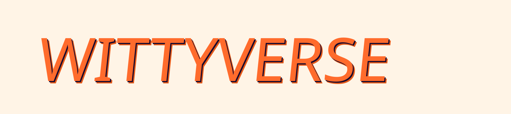

Quick Reference
If you only read one section. The 30-second answer to "what is Wittyverse?"
- TBD
Strategy & Positioning
For gift-givers who dread the “polite chuckle,” Wittyverse is the gag-gift store that turns every present into a 10-minute group comedy show — because every product is joke-dense, museum-quality, and sourced from a real parallel dimension that rewards repeat visits.
Onliness
The only gag-gift brand that combines extended comedy experiences (5–10 minutes of continuous laughter) with a real, interconnected universe (the Wittyverse) and professional-grade design quality.
Why This Position
- The gag gift category is dominated by two failing approaches: cheap one-moment novelties (Archie McPhee, generic Amazon sellers) that deliver a 5-second chuckle and get thrown away, and empty prank boxes (Pranko) that look funny on the outside but have no depth inside.
- No brand in this space treats gag gifts as engineered comedy experiences with layered jokes, professional design, and a shared universe that connects every product.
- This is the white space: gag gifts that are genuinely impressive — funny enough to hold a room for minutes, beautiful enough to keep, and deep enough to reward a second look.
What This Position Sacrifices
- We walk away from the impulse/cheap gift market entirely — our products cost $15–40 and justify it.
- We walk away from breadth-first product strategy — every SKU must pass 10 quality gates, so we launch fewer products than competitors.
- We walk away from “safe” mass-market humor — our comedy is smart, layered, and specific, which means some people won’t get it. That’s fine.
- We walk away from prank products entirely. Pranks (where the joke is at someone’s expense) don’t fit the Wittyverse, are easily copied, and dilute the brand. Pranks belong to the previous Witty Yeti brand era and are being phased out — they will not appear on Wittyverse.com and will not receive Wittyverse content, branding investment, or new product development. Wittyverse sells Wittyverse-sourced gag gifts. Full stop.
Category Frame & Competitive Context
- We compete in the gag gift / novelty gift category, but our true competition is anything a gift-giver considers when they think “I need a funny gift” — including doing nothing and grabbing a gift card.
- Our reframe: we’re not in the novelty business, we’re in the social currency business. The gift-giver is buying party hero status, not a product.
Customer
Two-tier audience. Tier 1 — Buyers (25–65, 60/40 M/F, middle America, ~30–60M TAM): anyone who needs to buy gifts + has humor sensibility (Onion / Hitchhiker’s / Office register) + knows others who share it. Tier 2 — Fans (Wittyverse-specific): same sensibility, deeper engagement; smaller pool, higher LTV, primary advocacy engine.
Psychographic & Behavioral Profile
Tier 1 — Buyers (broad, primary): 25–65, 60/40 M/F, middle class, US-broad (“middle America”). Estimated TAM ~30–60M.
The heuristic: anyone who needs to buy gifts + has a sense of humor + knows others who share it. All three conditions matter — pure gift-need without humor sensibility doesn’t convert; humor without gift-need doesn’t trigger purchase.
Sensibility filter (the writers’ room test): Appreciates Onion-style absurdism, magical realism where the realism is stronger than the magic, and medium-roast comedy. Recognizes the register of Hitchhiker’s Guide, Office Space, SCP Foundation, Better Off Ted, Waterford Whispers. Hard anti-sensibility: rejects “lol so quirky” humor, hype-energy (“OMG INSANE”), horror/dread, and mean-spirited content. If the writers find it funny without crossing extreme triggers, it’s the right audience.
Behavior: Shops online. Doesn’t need extensive research before buying a gag gift. Defaults to Amazon for gift searches but will follow a recommendation off-platform if intrigued.
Tier 2 — Fans (narrower, Wittyverse-specific): Same sensibility as Tier 1, deeper engagement. Buyers who get pulled into the universe past first purchase — recognize recurring characters, follow whatever content/community/cadence structures the world develops.
Engagement mechanism TBD in worldbuilding — could be cyclical content, recurring characters, a place to read/watch, or something not yet decided.
Smaller pool, higher LTV, primary advocacy engine. The “Where did you GET that?” reaction propagates from this tier outward to fresh Tier 1 buyers.
Decision Drivers & Unmet Needs
- Primary need: “I need a gift that guarantees I’ll be the hero. I don’t want to stress about this.”
- Unmet need: Every existing gag gift is a gamble — cheap quality, shallow jokes, embarrassing to give. They want a sure thing that makes them look clever by association.
- Secondary need: Permission to be silly in a group setting. The product gives the whole room a reason to laugh together.
- Tier 2 add (light, optional): Want a place worth coming back to — a world to inhabit and references to recognize, on top of the next gift.
Decision Journey
- Discover: Sees a friend’s Wittyverse product at a party, gets sent a piece of Wittyverse content, stumbles on the storefront via Amazon or social, or receives one as a gift themselves.
- Evaluate: Checks reviews (social proof that it’s actually funny and well-made), browses other products, notices the quality and joke density in product photos.
- Choose: Buys because the product looks impressive enough to guarantee a reaction. Price ($15–40) is low enough that the risk is minimal.
- Advocate: Becomes the person who tells everyone about Wittyverse. Shares photos, reads jokes aloud to people who weren’t there, displays the product. Returns to buy for the next occasion. Some cross into Tier 2.
Anti-Persona (Who This Brand Is NOT For)
- People who want a $5 throwaway stocking stuffer and don’t care about quality.
- People who find all potty humor beneath them, regardless of how cleverly it’s executed.
- People who want mean-spirited pranks designed to humiliate someone.
- People looking for “clean” humor only — we’re not vulgar, but we’re not Hallmark.
- People whose humor sensibility is “lol so quirky” / hype-energy (“OMG INSANE”) / shock-as-substitute-for-craft. The brand explicitly rejects this register.
- People who want horror, dread, or analog-creepy content. The Wittyverse is weird-warm, not weird-menacing.
Voice & Messaging
v0.2 — encodes the two-register rule (R2 storefront chrome / R1 in-universe operation) and the canon principle that governs every customer-facing surface: Voice everywhere. Face nowhere.
Personality
Persona vs. Man
Voice everywhere. Face nowhere. Winston's operation is off-the-books — the portal is secret, his real surname is erased, the manufacturing dock is hidden. He depends on the alias for plausible-deniability cover. So on every customer-facing surface, Dr. W. Yeti PhD (the alias, the credentials, the signed stamp, the brass-plate energy) is always present. Winston the man (real face, real name, portal location, factory) is never present. The signed W. is the operator's face — that's the only face the brand shows.
Do: show silhouettes, back-of-head, hands-only, or a face obscured by the signed-W. stamp when a "portrait" is unavoidable. Don't: show Winston's face, use his real surname, or reveal portal location / manufacturing partners — anywhere, ever.
Do
Don't
Messaging Framework
- Tagline
- Value Prop
- Boilerplate
Sample Copy
Both registers, side by side. Read these once and you can write more in the same voice. R2 = Dr. Yeti speaking. R1 = the operation documenting itself.
Q (Dr. Yeti, R2): "How fast can you get one of these into a customer's hands? Because I personally hate waiting."
A (Operation, R1): Orders received by Monday 11:59pm ET ship the following Tuesday from North Carolina. Domestic transit: 3–6 business days. Tracking is provided. Tuesdays are the only dispatch window.
Trust Seal Cluster · reusable component
A grouped set of seals/stamps that surfaces next to every primary CTA — Add to crate, Subscribe, Browse the Manifest, Checkout. Same four members, same order, every time. The cluster is how the operation signs every transactional moment without ever showing Winston's face. Treat it like a logo lockup: don't reorder, don't substitute, don't isolate a single seal.
- Patent Office lol cert — thumbnail of the canon "only paperwork that exists."
- Personal Guarantee · W. — signed stamp. Dr. Yeti's hand on every order.
- Sole Authorized Importer · Earth — brass-plate badge. Performative exclusivity.
- Dispatched Tuesdays · NC — operational stamp. Concrete enough to feel real, vague enough to disclose nothing.
Placement: immediately adjacent to the primary CTA (right side on desktop, beneath on mobile). Cluster reads at-a-glance as a unit; individual seal meaning is secondary to the overall trust signal.
Visual System
Logo

Clear Space
Maintain clear space equal to 1/3 the cap-height of the wordmark on all sides. The wordmark is locked to ALL CAPS (`WITTYVERSE`), so there's no lowercase reference — cap-height is the only measure. Clear space scales proportionally at every size.
Don't
- ✗ Don't stretch or skew the mark beyond the locked −6° (wordmark) or −5° (monogram)
- ✗ Don't apply gradients, blur, or non-canonical shadow colors
- ✗ Don't set the wordmark in mixed-case — `WITTYVERSE`, never `Wittyverse` (see NEVER 15)
- ✗ Don't set the wordmark in Big Shoulders Display — Lilita One only (see NEVER 3)
- ✗ Don't place on busy photo backgrounds without a solid backplate / card chamber
Logo typeface
Casing rule: ALL CAPS — `WITTYVERSE`, not `Wittyverse`. (Locked 2026-05-11 after the type-stack-pairings test confirmed uniform cap-height grips the stacked color shadow.)
Why this face: Lilita One reads as showman / candy-bar / theme-park signage, which maps to Winston the showman-importer. Tested against 17+ candidates in Phase A.7 (see design-sprint-2026-05-05/font-research/) — no chunky-rounded face within free or mid-tier budget beats it on the vibe-AND-distinctiveness bar. A custom-drawn version is planned long-term for trademark distinctiveness.
Acknowledged debt: Lilita One is an open-source typeset, so the wordmark currently relies on the typeset + the treatment language (skew + stacked shadow + mono tag) for distinctiveness. Custom lettering is scheduled when budget allows; the treatment language stays unchanged.
Avatar / Favicon — Small-Size Mark
The favicon is its own variant — separate spec from the lockup-zoom monogram. Below 24px the locked skew and stacked shadow collapse into pixel mud, so the favicon strips both: no skew, no shadow, single-color tile + simplified glyph. Use monogram-favicon.svg for everything at 16–128px; the lockup-zoom monogram-lockup.svg kicks in at 24px and above.
- ✓ Favicon variant has no skew and no shadow — both collapse below 24px
- ✓ The 16px rendering uses the PNG raster (
monogram-favicon-16x16.png) for pixel-snap clarity; SVG is used at 24px and above - ✗ Don't use the wordmark at small sizes; always drop to the monogram
- ✗ Don't apply the locked −5° skew or stacked shadow to the favicon variant (see NEVER 13)
Color
v0.7 — surface system + register split + six usage rules. The palette earns its loudness from Winston's importer storefront brief. The rules keep it from turning into a fight between accents.
Two registers
Wittyverse runs on a deliberate split. This Color section governs R2 — Winston's storefront chrome. R1 — in-universe content — lives in canon and follows its own deadpan rules. The joke is in the proximity.
Palette · ramps
Each brand hue lives as a 4-step ramp. -400/-500 is the canonical value used in the wordmark and identity assets; -100 tints are how brand DNA enters dense layouts (card backings, badges-at-rest); -700 is the deep variant for shadows and sustained chrome; -900 is the legible variant on cream.
#1F8B3D) but is tuned to read as a sibling of state-error red (#C92A2A) — same saturation register, complementary perceptual weight, so positive/negative reads feel like the same family. Distinct hue from brand lime (135° vs 85°) keeps the two greens unambiguous in dense displays; rule 6 below covers the edge case where both appear in the same column.
Token architecture · 3 tiers
Raw values get a brand-truth name (Tier 1). Tier 2 maps purpose to those names (--surface-default, --action-primary-bg). Tier 3 binds purpose into a specific component slot (--card-bg, --cta-shadow-stack). UI code should read Tier 2 and 3 — never reach down to Tier 1 hex values.
| Tier 1 — Raw | Tier 2 — Semantic | Tier 3 — Component |
|---|---|---|
--cream | --surface-default | page ground |
--white | --surface-elevated | --card-bg |
--white | --surface-input new | form field background |
--white | --surface-overlay new | modal / sheet / dialog |
--purple-400 | --surface-chrome | hero / marquee / showman moments |
--purple-700 | --surface-chrome-deep new | sustained chrome — sidebars, dashboards |
--ink | --action-primary-bg | primary CTA background |
--lime-400 | --action-primary-fg | primary CTA text |
--orange-500 | --action-accent-bg | accent CTA / marquee |
--cream | --text-running-on-chrome new | multi-line text on purple (NEVER lime) |
--lime-400 | --text-link-on-chrome | short labels on purple |
--surface-input, --surface-overlay, --surface-chrome-deep, and --text-running-on-chrome. Cream is the ground; white is what LIFTS off it (cards, inputs, modals). Purple has two jobs: chrome moments (-400) and sustained surfaces (-700) — never use -400 for surfaces the eye dwells on for >5 seconds.
Six usage rules
Tested in eight real digital media (hero, mobile, product grid, email, social, banner ad, dashboard, dark mode). Without these rules the palette becomes a fight between accents — with them it stays confident polychrome.
-
1Pick ONE saturated lead per screen.
Lime or orange leads. The other plays supporting (shadow, minor tag, footer accent). Both saturated at full volume = competing carnivals.
-
2Purple has two jobs — use two values.
--surface-chrome(purple-400) for hero / marquee / header strip / ad backdrop / CTA shadow.--surface-chrome-deep(purple-700) for sustained surfaces (long sidebars, dashboards, dark-mode grounds). Don't use-400for surfaces the eye dwells on. -
3Cream is the data ground.
Any layout with dense reading, tables, grids, or repeating cards → cream surface. The saturated palette earns its keep on chrome / accents / single moments. Never on data layers.
-
4Light tints (
-100) bring brand DNA into dense layouts.Product cards, callouts, badges-at-rest → use
purple-100,lime-100,orange-100. Saturated-400/-500reserved for attention. -
5Max one stacked-shadow element per visual section.
The lime+orange / orange+lime stacked shadow is the brand's signature. Two of them within ~600px muddies the focal point. Reserve for the primary CTA or the hero card, not both.
-
6State green and brand lime — keep them apart in dense data.
State-success (
#1F8B3D) and brand lime (#9EE83D) live in distinct hue families (135° vs 85°) and are unambiguous at normal sizes. At small sizes or in dense tables / dashboards where both render as colored chips, prefer spatial separation — split brand tags and status into two columns with header labels.
Interactive states
Every action × five states. The "default" sample is a real interactive button — hover, focus, and click work. The other four show the resting visual for each state.
ink + lime
cream + ink
orange + ink
Pairings & contrast
All ratios computed live from the token values — if a token changes upstream, this section updates with it. Body text must meet AA (4.5:1). Decorative / large-only use can sit at 3:1.
Matrix · 8 surfaces × 8 text colors
Canon pairings
The combinations that appear repeatedly across the brand. Use these first; verify any new pairing against the matrix above.
:root values means any future palette tweak surfaces here automatically. Two things worth flagging: --orange-500 on cream sits at 2.62:1 — decorative-only, never body text. --lime-400 on --purple-400 at 6.29:1 is AA body / AAA large — fine for the canon "Lime on Purple" pairing, but if you ever need it at small-text sizes verify in the matrix above.
Dark/light · dual mode
The same tokens render two registers. Wrap a region with [data-surface="chrome"] to flip cream-ground → purple-ground; the rest of the system follows. Same content below, two grounds. Never auto-flip via OS preference — the brand has a default mood.
Six instruments. One field journal. Direct from Cycle 247.
Six instruments. One field journal. Direct from Cycle 247.
- ✓ Cream-ground for long-form (blog, docs, product, checkout). Ink text, brand colors as accents only.
- ✓ Chrome-ground for hero / marquee / social / ads / dark mode. Cream text for body; lime for short links only.
- ✗ Never auto-invert via OS preference — the brand has a default mood per surface type.
- ✗ Never switch ground mid-page; pick one anchor for the surface.
Typography
Type Specimens
Type Scale
Display sizes use clamp() for fluid scaling. Body copy is fixed-pixel for predictable reading rhythm.
| Token | Use | Size | Weight / Style |
|---|---|---|---|
| Wordmark | Logo only — `WITTYVERSE` | Variable (36–88px+) | Lilita One 400 ALL CAPS, skewX(−6deg), stacked color shadow |
| Hero | Landing-page H1 (display copy) | clamp(48px, 7vw, 88px) | Big Shoulders Display 900, skewX(-6deg) |
| Pulp display | Hero banner / marquee / ad headline (1 use per page) | clamp(54px, 8vw, 96px) | Bowlby One 400, skewX(-7deg), stacked colour shadow |
| H2 | Section header | clamp(36px, 5vw, 56px) | Big Shoulders Display 900, skewX(-6deg) |
| H3 | Sub-section header | clamp(24px, 3vw, 32px) | Big Shoulders Display 800, skewX(-5deg) |
| H4 | Card / sub-block label | 18-22px | Big Shoulders Display 800 uppercase |
| Card title | Cards, surface labels | 32px | Big Shoulders Display 900, skewX(-5deg) |
| CTA | Buttons | 16-18px | Big Shoulders Display 900 uppercase |
| Body | Paragraph copy | 14-16px | Public Sans 400-500, line-height 1.55-1.6 |
| Kicker | Wordmark tagline (italic aside) | 11-13px | Public Sans italic 500-600 |
| Eyebrow / Label | Small caps above headings | 11px | Public Sans 800 uppercase, letter-spacing 0.14em |
| Caption | Hex codes, small print | 11-13px | Public Sans 600-700 |
| Mono tag | CYCLE 247 / regulatory / badges | 10-12px | JetBrains Mono uppercase, letter-spacing 0.12em |
Pairings & Don'ts
Do
- Use Lilita One ONLY for the wordmark (`WITTYVERSE`) and the W monogram.
- Use Big Shoulders Display 900 for site display copy — headings, subheadings, buttons.
- Use Bowlby One ONLY for pulp display moments — hero banners, marquee strips, ad headlines. Maximum ONE use per page.
- Pair Big Shoulders display headline + Public Sans subline (never Display + Display).
- Use JetBrains Mono only as the deep-canon tag — `CYCLE 247`, regulatory microline, mono badges. 10–12px, all-caps, 0.12em tracking.
- Use the skewX(−6deg) tilt on the wordmark; −5deg on the monogram; −5° to −7° on display headlines; −7° on pulp display.
- Reserve uppercase for the wordmark + Display headlines + eyebrows + pulp display. Body stays sentence case.
Don't
- Don't render the wordmark in mixed-case (`Wittyverse`) — always ALL CAPS `WITTYVERSE` (NEVER 15).
- Don't set the wordmark in Big Shoulders Display or Bowlby One — Lilita One only (NEVER 3).
- Don't use Lilita One for non-wordmark display, body, or accent copy — it's the wordmark face only.
- Don't use Bowlby One for body, eyebrows, CTAs, navigation, or in-line emphasis. Pulp display moments only.
- Don't use Bowlby One more than once per page — multiple uses dilute the "this is the loud bit" signal.
- Don't run body copy in Big Shoulders, Bowlby, Lilita, or JetBrains Mono.
- Don't lower the skew below −4deg or above −7deg — it loses its punch (NEVER 4).
- Don't combine 3+ display weights in the same composition.
- Don't justify body text — left-align everywhere.
Imagery & Illustration
Direction (placeholder)
- Mood
- Mood placeholder — descriptors of the emotional register the imagery should sit in (e.g., "neon-lit, mid-century, slightly haunted").
- Color Treatment
- Color-treatment placeholder — how photography/illustration is graded against the canon palette (saturation, dominant hue, blacks/whites).
- Subjects
- Subjects placeholder — what kinds of objects, people, or scenes are in-brand vs out-of-brand.
- Composition
- Composition placeholder — framing rules, hard-shadow / halftone usage, off-center vs centered, decorative motifs (the ✦ star is canon decorative).
- Don'ts
- Don'ts placeholder — categories of imagery to avoid (e.g., generic stock photo, over-rendered 3D).
Current assets in the wild
Real assets already shipping in the Wittyverse repo. These are reference points for current state — direction above is what gets defined deliberately later.
Iconography
Wittyverse does not yet have a defined icon system. When defined, the system should fit the brand's existing language: rounded geometry, 2-3px stroke, hand-drawn feel rather than precise grid icons. Filled glyphs (with ink stroke + lime/orange accent fill) likely match the chunky, slightly-pulpy register better than thin-line outlined icons.
Layout, Spacing, Grid
Spacing Scale
Base unit 4px. Use the listed steps; avoid intermediate values.
Grid & Container
| Token | Value | Notes |
|---|---|---|
| Max-width (page) | 1200px | Outer container for topbar, main, footer. |
| Gutters | 24px desktop · 16px mobile | Horizontal padding on the container. |
| Section spacing | 64px | Vertical rhythm between top-level sections. |
| Card padding | 24-28px | Cream cards with ink border + hard ink shadow. |
| Card radius | 20px | Outer cards. Inner cards use 12-14px. |
| Card shadow | 0 8px 0 ink + soft drop | Hard offset shadow is signature; no soft-only shadows. |
| Mobile breakpoint | 720px | Multi-col grids collapse to single column below this. |
Composition Principles
Do
- Compose asymmetrically — off-centered hero CTAs, tilted display type.
- Use hard ink shadows (0 4-8px 0 ink) as the brand's signature depth.
- Layer flat color blocks over a purple-gradient backdrop.
- Use the ✦ star and pipe (|) as decorative separators in the brand chrome.
Don't
- Don't use soft drop-shadows alone — pair with the hard offset shadow.
- Don't justify text or center long-form body copy.
- Don't use thin hairline borders — minimum 2px, brand standard 3-4px.
- Don't break out of the spacing scale for "almost-right" gaps.
Surfaces — Compare Lab
The 6 medium templates rendered live. Each surface uses a different canon pairing so the page doubles as a palette-in-use sheet. Toggle voice/palette presets in the topbar to see ripple.
Asset Gallery
Real assets currently shipping in Wittyverse — monogram and profile background.


Changelog
Versioned record of brand-guidelines changes. Add an entry to data/changelog.json on every meaningful update.